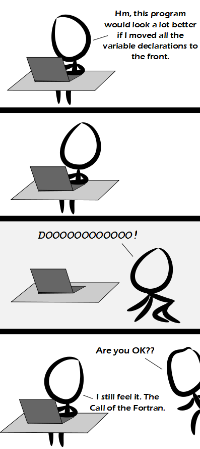

Comic JK 923
When I Feel Like It
⇤
<
?
>
⇥

⇤
<
?
>
⇥
Forum
.
RSS
.
Digg
.
Facebook
.
Reddit
.
Twitter
.
Stumbleupon
#include <stdio.h> /*Enter your thoughts on number 923 here. Please, no spamming, trolling, phreaking *or coding in Fortran; * * ...and no semicolons; * ......and your if statements end with "END IF", which confuses the bejeezes out of * you if you want an ELSE IF in there; */ print("Python is better!") #projectcaossi[dawt]byethost18[dawt]com/files/scripty-alpha-beta-gamma-buggy.zip & var 0 ! loop $ top % top + var 1 (var < 10 )^loop int main() { printf("Structure makes things easier. Declare all variables and constants up front or security may confiscate them and you'll never see them again."); printf("Declaring variables first also helps the optimizer/compiler to allocate registers and stack space more effectively."); printf(">> It's a compiled language! The compiler can find all the variables itself..."); int x; x = 0; while (x < 12) { printf(">>> Yes, but some compilers are single-pass and it's not that simple."); printf(">>>> You should declare your variables where it makes sense. Compilers are smarter than you, don't try to do the optimization they do, just use -O and -Wall .. and -pedantic .. and well actually a lot of other flags ... <PROFANITY> you gcc"); printf(">>>>> This is simply not true. There are tons of non-obvious things you can do in the actual code to give the optimizer hints. When people say that the compiler is smarter than you - it's generally true if you're writing assembly yourself. That's not to say there isn't such a thing as more optimizable code."); printf(">>>>>> Concern is rightly for the person debugging the code, not the machine."); printf(">>>>>> Like using data structures which are optimal to the task at hand. Beside that obvious point, any trick you might want to employ (unrolled loops, inline expansion, ...) is already used by the compiler, especially if it's a common architecture you're compiling for."); printf(">>>>>>> I would add that, if there is confusion as to where your variables should be declared, the function is probably too long."); printf(">>>>>>> On the other side compilers as a rule do NOT consider cache sizes as part of their optimization for truly highly optimized code compilers will often fail because they will unroll things that should not be unrolled or unroll them too far causing it to break code locality and do additional accesses to level 2 or 3 cache wasting 10-50 cycles per iteration for complex loops."); ++x; //Fuck that, optimizing for size should now be part of the default } //settings of the compilers, escape analysis is easier for //the (X64/86 | power) to pure RISC translator on compact asm return 0; //do not do it yourself tell|teach your compiler to do it } //Why would you delete the joke about your anus when most viewers only really come here for jokes about your anus? It's your delete key though, ya crybaby.// //> I'm sure if ppl want mother jokes, they can find pages of them very easily, rather than coming to a tech-heavy webcomic's comment box. BTW, I'm NOT the one deleting them// //>>It's your anus that finds it offensive. She found THE comment box.// //>>>All Hail THE Comment Box!!!// void *your_anus(void *your_anus) { printf("dereferencing your_anus: %s/n", (char *)your_anus); return (void *)((int *)your_anus++); } // Good coders make EVERYTHING a (void *) type. //// They also limit their variable names to length of 9 ////// Have fun without namespaces. //////// Oh I thought we were just kidding around. ////////// Is a length of 9 a real constraint of any language, or is it just conveniently the length of "your_anus", because "your_mother" is too long? //////////// On the nose! //////////// Your father is too long. ///////////// That's what she said. C I always enjoyed programming in Fortrand, but then they started mucking it C around I realised there is only one true programming tool - hex edit! C hmm Your anus <<< Parsing error! <?php echo "I LOLED!"; > std::cout << "Frap!"; PROGRAM HEY PRINT *,'WTF IS WRONG WITH FORTRAN? ITS A GREAT LANGUAGE!' C DON'T BE A DICK! STOP HAMMER TIME END